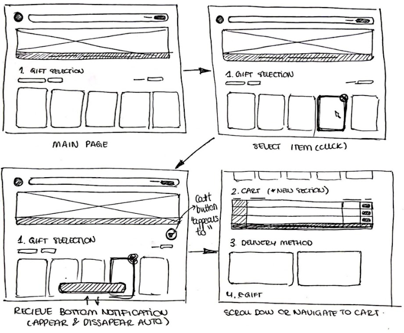
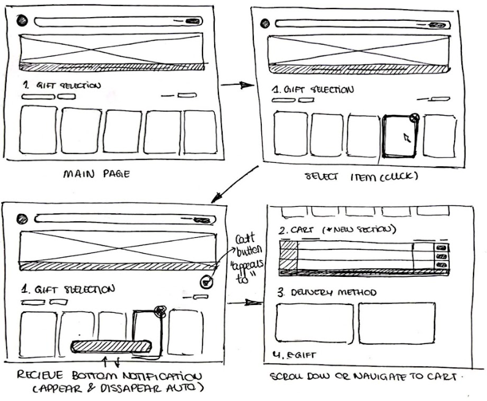

Zest Shopping Cart Iterative Design
Introduction
Zest is a corporate gifting intermediary that connects brands to corporate gifters in streamlined and intuitive fashion. Zest approached our team with a feature request to add a shopping cart to their existing UI consistent with their style and practices.
Objectives
- Complete the full iterative design process in solving a design problem
- Practice building collaborative designs with a team
- Practice providing and receiving design critiques
- Create an interactive interface from start to finish that will act as an effective portfolio piece
- Interact with a startup founder (or someone leading product, engineering or design) who will be your client
Understanding the Problem
Bulls Eye customer description
- Gift buyers who are purchasing more than one product
- Gift buyer sending multiple products to each recipient
- Gift buyer sending multiple qty of the same thing to each recipient
User Pain Points
- When a brand has a large catalog, gift buyer’s selections are not easily accessible, and they forget what they selected or are frustrated trying to find it
- The current design does have quantity selection, and customer cannot send more than 1 of each product to a recipient
With some of the pain points and target customer information in mind we had a few questions we wanted to ask to better understand the feature Zest wanted from us.
Clarifying Questions
- Can the user select products across different brands/partners? If not, is this a desired functionality for the future? Example: I want to select chocolates from a chocolate partner and flowers from another flower partner and send it to the same recipients.
- Are we expected to allow multiple recipients to get unique gift configurations in one shopping experience? For example, I want to send 3 items (2 of item A and 1 of item B) to 3 different recipients. Recipient 1 gets the two item A’s and Recipient B gets one item B. Is this the desired behavior in the feature request?
- In the project brief, one of the success metrics mentioned was "reduced errors during checkout." Could you please provide more details on the current issues users encounter during the checkout process?
The Process:
1. Sketching:
Each of sketched out rough ideas of what we thought the shopping cart looked like


 

2. Wireframes:
We felt our designs had strong merit and fit within the style Zest had cultivated and wanted to create some beginner wireframes to visualize our ideas in a more realistic implementation.


We added a quantity indicator to the card item itself and added a "side-cart". The purpose of our decision to add this side cart was to tackle the pain point of gifter's not knowing what was already in their cart while shopping, especially on larger orders. This feature would allow the gifter to simultaneously browse the shop and view the contents of their cart.
3. Critique:
We put together a loom video going over our design in more detail to send to Zest for feedback. But before sending it to the client we had subject matter experts give us critiques on our existing degigns as a next step to gain insight on what we had created so far.
4. Subject Matter Expert Critique:
- Having the featured gifts dropdown above the cart is confusing. Does this mean you are sorting the cart or the items being browsed?
- The scheme for displaying item quantity is intuitive and does not present any "suprises"
- An addition of a cart button or symbol prior to the cart popping out from an item being added would inform the user there is a cart feature they will be able to utilized later.
5. Client Check In
Next we reached out to the client with our loom video for feedback. We asked questions at the end of the loom video we felt would help us better fufill the feature request. The answeres to those questions are below.
- Question: The UX for multiple item selection, is it clear and intuitive?
- Answer: Yes and no. The interface with "+ QYT -" showing up after each product selection is easy to use. However, it is unclear at this point of the experience if QTY is the number of products each recipient will receive or the number of recipients in the entire order. Said differently, if the user is sending gifts to 10 recipients and each recipient is to receive 2 Mini Artist box, should the user set the quantity to 10 or 2? Making this clear will be key to launching this feature.
- Question: Does it align with Zest's style components?
- Answer: Yes, on point!
- Question: Our decision to choose the side cart bar, it is a meaningful competitive differentiator?
- Answer: We don't see the side cart bar as a meaningful competitive differentiator, but also it does not need to be. We like the concept of the sidebar very much, it solves the problem you captured at the beginning of the loom and gives the user a clear understanding of what they have selected. We're curious where you would put the side cart in mobile view. We'll love to see a mockup for that.
Improved Wireframes
With the subject matter expert advice and critique along with the feeback the client provided the team, we revised our wireframe. We added the cart to the top corner when the side-cart is not popped out so the user can know about the cart feature and is not suprised by it later when it pops out when an item is added. Addittionally we changed our tags to show not just quantity but to display that quantity is intended per user. This distinction is reinforced by the notice at the top of the sidecart.
Mobile wireframes were also added with a slightly modified UI. Due to the lack of UI real-estate, the cart was designed to cover the whole screen upon selection. The items are also listed in a row instead of a matrix. The biggest change was the addition of a newer section at the bottom for the user to be able to review their items before checking out. This ties back to the original goal of keeping the user informed of their selections before they make a purchase.


Hi-Fi Prototyping:
Now we are finally ready to put our redesigned wireframes together into a living breathing prototype to show exactly what the user flow will look like with out design
Final Feedback:
During our meeting with the company, we presented an alternative method for the user shopping experience, which was well received. We also confirmed that our current approach is effective, especially since we considered the company's preference for minimal changes. We received the following critical feedback:
Desktop Critique:
- It is unclear how the quantity per recipient changes when items are added or removed using the icon.
- The color of the Remove button is not visible enough.
- Consider making the cart accessible across all sections of the site.
- The Brightland logo appears twice in the cart.
Mobile Critique:
- The title in the Review Items Section is confusing. It's unclear whether it refers to each recipient or to all items collectively.
Final Feedback implementation
After reviewing the feedback from the meeting, we decided to redesign the desktop version of the shopping cart, focusing mostly on the opened cart and the item selection.
The main modifications implemented were the following:
- In order to avoid showing the logo in different parts of the screen, we decided to fix the top section of the interface. In this manner, regardless of the scroll position, the logo of the store is always visible on the top left corner. Following this decision, we deleted the logo from the shopping cart.
- Within the item selection, again, we fixed the heading of the selection. This heading includes the button to access the cart, which we believe should be accessible at all times while browsing items.
- Within the item selection, we added different states to the cart button, to show its status (inactive/empty/with items).
- When the cart is open, we leveled its container to the filter and sorting buttons, to simplify the layout and make the navigation more user friendly.
- Additionally, we fixed and simplified the content of the open cart. Our main goal was to make it more clear that the item selection is represented per recipient. With this goal, we also modified the title from: Your shopping cart, to: Your item selection.
- Furthermore, we added an option to delete items directly from the cart rather than just modify its quantity, and we added an additional feature: a calculator (to estimate the cart total, simulating the number of recipients).
- Moreover, we removed the checkout button from the opened cart to reduce confusion and we changed the hide option to a simple X in the upper left corner of the cart.
- Within the product cards, we rearranged the add, decrease and remove buttons to make it easier to understand and navigate. Additionally, we returned to our original version of the delete button as it proved to be more intuitive. In order to decide the final aesthetic of the product cards, different versions were drafted and rated by 12 users, which allowed us to arrive at our final iteration.